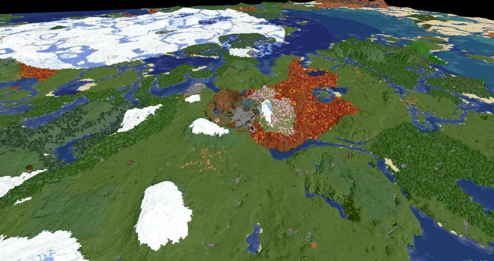

Mapa świata
Zobacz, dokąd zaprowadzi Cię przygoda.
Prawdziwa mapa serwera w przeglądarce — 2D i 3D. Przybliżaj, obracaj i szukaj miejsca na swoją bazę.

Mapa na żywo
Mapa otwiera się w nowej karcie, żeby strona działała szybko. Na telefonie najlepiej oglądać ją w widoku płaskim (ikonka u góry mapy).
Mapa aktualizuje się wraz ze światem. Nie wszystkie obszary muszą być jeszcze widoczne — świat ma 16 000 kratek szerokości i dorysowuje się stopniowo.